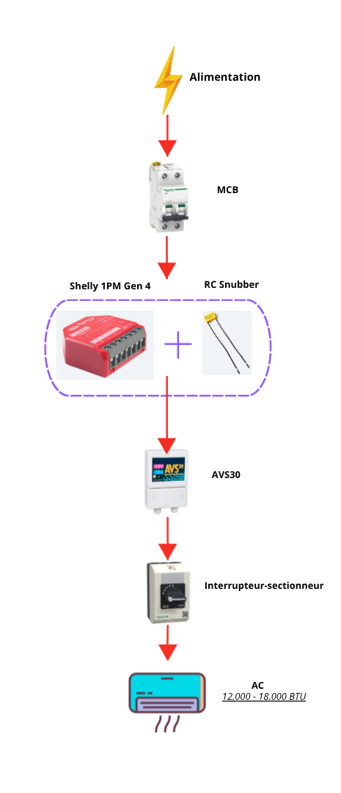

Avec cette solution, grâce au Shelly 1PM Gen 4, la climatisation peut être pilotée à distance via une application (téléphone ou PC). Cela facilite un contrôle en temps réel, un suivi de la consommation d’énergie et une gestion plus flexible de l’équipement. Par exemple, l’unité peut être allumée ou éteinte à distance en fonction des besoins ou des conditions d’utilisation. Cette solution est adaptée aux climatiseurs d’une puissance comprise entre 12 000 et 18 000 BTU. Deux options d’installation sont possibles : soit dans une boîte de distribution, soit sur rail DIN grâce à un support imprimé en 3D spécialement conçu pour le Shelly.

| MSF Code | Description (FR) | Commentaire |
|---|---|---|
| PELEMCBS2B16M | Disjoncteur B16 6kA, 2P |
Protection principale du circuit contre surcharge et court-circuit. |
| - | SHELLY 1PM Gen4 16A, 1 output, 110/240 V AC |
Permet le pilotage à distance et la mesure de la consommation électrique. |
| - | Support Rail DIN (Impression 3D) ABS ou PETG |
Support permettant le montage du Shelly sur rail DIN dans le coffret (alternative à la boîte de distribution). |
| - | RC SNUBBER 100nF/100Ω |
Protection du Shelly contre les pics de tension (charge inductive). |
| PELEVOLL230F | Commutateur AVS30 30A, 230V |
Protection contre les variations de tension et délai de sécurité. |
| - | Interrupteur-Sectionneur TeSys Vario IP65 |
Coupure manuelle locale pour maintenance sécurisée. |